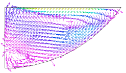
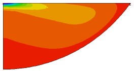

|
buoyant |

  
|
|
buoyant |
|
{ BUOYANT.PDE
This example addresses the problem of thermally driven buoyant flow
of a viscous liquid in a vessel in two dimensions.
In the Boussinesq approximation, we assume that the fluid is incompressible,
except for thermal expansion effects which generate a buoyant force.
The incompressible form of the Navier-Stokes equations for the flow of a fluid
can be written
dt(U) + U.grad(U) + grad(p) = nu*div(grad(U)) + F
div(U) = 0
where U represents the velocity vector,
p is the pressure,
nu is the kinematic viscosity
and F is the vector of body forces.
The first equation expresses the conservation of momentum, while the second,
or Continuity Equation, expresses the conservation of mass.
If the flow is steady, we may drop the time derivative.
If we take the curl of the (steady-state) momentum equation, we get
curl(U.grad(U)) + curl(grad(p)) = nu*curl(div(grad(U)) + curl(F)
Using div(U)=0 and div(curl(U))=0, and defining the vorticity W = curl(U),
we get
U.grad(W) = W.grad(U) + nu*div(grad(W)) + curl(F)
W.grad(U) represents the effect of vortex stretching, and is zero in
two-dimensional systems. Furthermore, in two dimensions the velocity has
only two components, say u and v, and the vorticity has only one,
which we shall write as w.
Consider now the continuity equation. If we define a scalar function psi
such that
u = dy(psi) v = -dx(psi)
then div(U) = dx(dy(psi))-dy(dx(psi)) = 0, and the continuity equation is
satisfied exactly. We may write
div(grad(psi)) = -dx(v)+dy(u) = -w
Using psi and w, we may write the final version of the Navier-Stokes
equations as
dy(psi)*dx(w) -dx(psi)*dy(w) = nu*div(grad(w)) + curl(F)
div(grad(psi)) + w = 0
If F is a gravitational force, then
F = (0,-g*rho) and
curl(F) = -g*dx(rho)
where rho is the fluid density and g is the acceleration of gravity.
The temperature of the system may be found from the heat equation
rho*cp*[dt(T)+U.grad(T)] = div(k*grad(T)) + S
Dropping the time derivative, approximating rho by rho0,
and expanding U in terms of psi, we get
div(k*grad(T)) + S = rho0*cp*[dy(psi)*dx(temp) - dx(psi)*dy(temp)]
If we assume linear expansion of the fluid with temperature, then
rho = rho0*(1+alpha*(T-T0)) and
curl(F) = -g*rho0*alpha*dx(T)
--------------------------
In this problem, we define a trough filled with liquid, heated along a center
strip by an applied heat flux, and watch the convection pattern and the heat
distribution. We compute only half the trough, with a symmetry plane
in the center.
Along the symmetry plane, we assert w=0, since on this plane
dx(v) = 0 and u=0, so dy(u) = 0.
Applying the boundary condition psi=0 forces the stream lines to be parallel
to the boundary, enforcing no flow through the boundary.
On the surface of the bowl, we apply a penalty function to enforce a "no-slip"
boundary condition. We do this by using a natural BC to introduce a surface
source of vorticity to counteract the tangential velocity. The penalty weight
was arrived at by trial and error. Larger weights can force the surface
velocity closer to zero, but this has no perceptible effect on the temperature
distribution.
On the free surface, the proper boundary condition for the vorticity is
problematic. We choose to apply NATURAL(w)=0, because this implies no vorticity
transport across the free surface. (11/16/99)
}
TITLE 'Buoyant Flow by Stream Function and Vorticity - No Slip'
VARIABLES temp psi w
DEFINITIONS Lx = 1 Ly = 0.5 Rad = 0.5*(Lx^2+Ly^2)/Ly Gy = 980
{ surface heat loss coefficient } sigma_top = 0.01 { bowl heat loss coefficient } sigma_bowl = 1 { thermal conductivity } k = 0.0004 { thermal expansion coefficient } alpha = 0.001 visc = 1 rho0 = 1 heatin = 10 { heat source } t0 = 50
dens = rho0*(1 - alpha*temp) cp = 1
penalty = 5000
u = dy(psi) v = -dx(psi)
EQUATIONS
|
  |
temp: div(k*grad(temp)) = rho0*cp*(u*dx(temp) + v*dy(temp))
psi: div(grad(psi)) + w = 0
w: u*dx(w) + v*dy(w) = visc*div(grad(w)) - Gy*dx(dens)
BOUNDARIES
region 1
{ on the arc of the bowl, set Psi=0, and apply a conductive loss to T.
Apply a penalty function to w to force the tangential velocity to zero }
start "outer" (0,0)
natural(temp) = -sigma_bowl*temp
value(psi) = 0
natural(w)= penalty*tangential(curl(psi))
arc (center=0,Rad) to (Lx,Ly)
{ on the top, continue the Psi=0 BC, but add the heat in put term to T,
and apply a natural=0 BC for w }
natural(w)=0
load(temp) = heatin*exp(-(10*x/Lx)^2) - sigma_top*temp
line to (0,Ly)
{ in the symmetry plane assert w=0, with a reflective BC for T }
value(w)=0
load(temp) = 0
line to close
MONITORS
contour(temp) as "Temperature"
contour(psi) as "Stream Function"
contour(w) as "Vorticity"
vector(u,v) as "Flow Velocity" norm
PLOTS
grid(x,y)
contour(temp) as "Temperature" painted
contour(psi) as "Stream Function"
contour(w) as "Vorticity" painted
vector(u,v) as "Flow Velocity" norm
contour(dens) as "Density" painted
contour(magnitude(u,v)) as "Speed" painted
elevation(magnitude(u,v)) on "outer"
elevation(temp) on "outer"
END